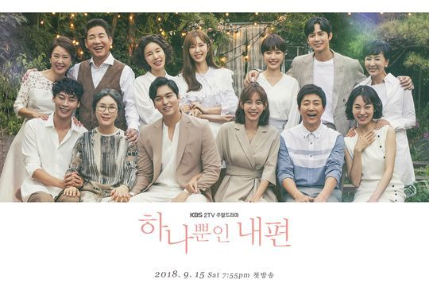

'하나뿐인 내편'은 2018년 9월 15일 부터 매주 토, 일요일 8시에 KBS에서 방영하는 주말드라마이다.드라마 '하나뿐인 내편'은 유이(김도란 역)와 이장우(왕대륙 역) 최수종(강수일 역)이 주인공을 맡았고 김사경 작가가 집필한 드라마이다.
돌아가신 양아버지, 친딸만 편애하는 어머니 밑에서도 밝고 씩씩하게 자란 유이, 우연찮게 입사한 회사에서 친아버지를 만나게 된다. 긍정적이지만 사랑을 재대로 받지 못한 주인공에게 30년 만에 진짜 내 편이 생기는데..